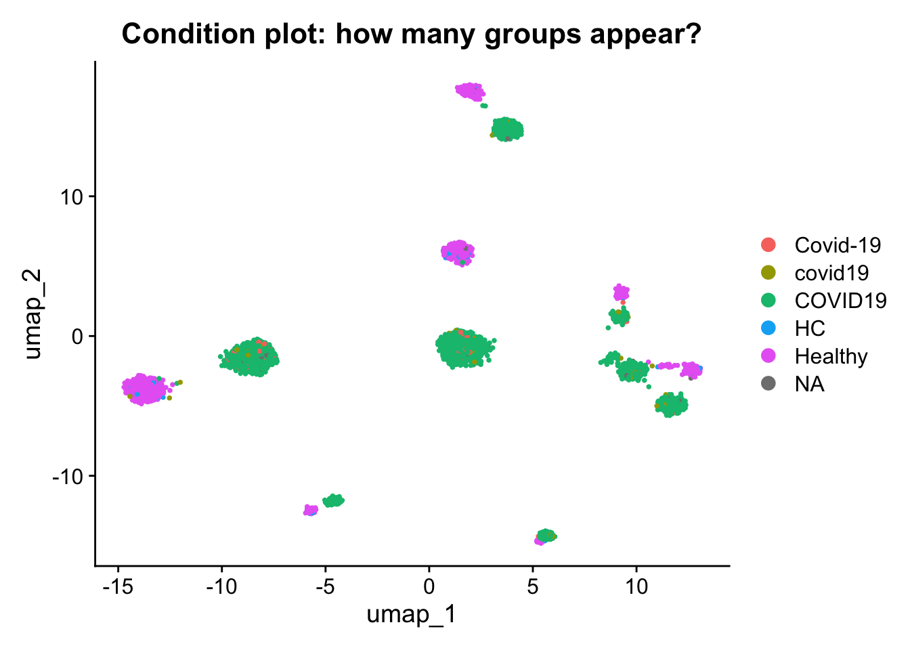
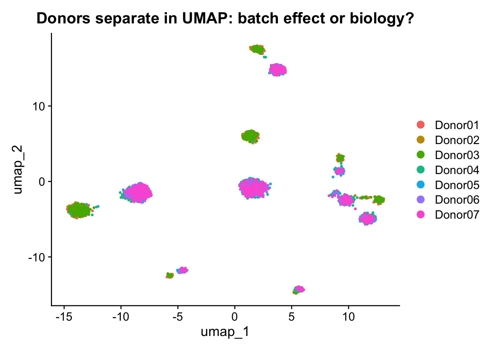

A.1Block 8 - Capstone (optional, post-class): an unknown broken object
Goal: Apply the diagnostic habits from the previous blocks to a single object that contains four independent problems. For each scenario, run the diagnostic code, write your hypothesis as a comment in the block below, then run the fix to confirm.
This is the capstone: the rest of the course taught you to spot specific failures one at a time. Here they all arrive in the same object, in no particular order, with no labels.
This block comes after Closing on purpose. The live session ends at Block 7; this is take-home work for whoever wants more practice before the next session, not something to rush through in the room. Run it on your own time, ideally a day or two after the course, once the diagnostic habits from Blocks 1-6 have had a chance to settle.
The instructor will release sobj_broken.rds separately. If the file is not present, this block is skipped (have_broken = FALSE) and the rest of the script still runs.
Tries the injected object first (needed for Scenario 4), then the base. If neither exists, Block 8 is skipped gracefully (have_broken = FALSE) so the rest of the report still renders.
Código
broken_candidates <-c("checkpoints/sobj_broken_errors.rds", "checkpoints/sobj_broken.rds")broken_path <- broken_candidates[file.exists(broken_candidates)][1]have_broken <-!is.na(broken_path)if (have_broken) { sobj_broken <-readRDS(broken_path)cat("Loaded broken object from:", broken_path, "\n")print(sobj_broken)head(sobj_broken@meta.data, 3)} else {cat("Broken object not found in data/. Block 8 will be skipped.\n")cat("To enable Block 8, place one of these files (paths relative to this .R script):\n")cat(" ", paste(broken_candidates, collapse =" or "), "\n")cat("Scenario 4 (ADT batch / isotype) requires the *_errors.rds from\n")cat("inject_course_errors.R.\n")}
Loaded broken object from: checkpoints/sobj_broken_errors.rds
An object of class Seurat
526 features across 3000 samples within 2 assays
Active assay: ADT (26 features, 0 variable features)
1 layer present: counts
1 other assay present: RNA
2 dimensional reductions calculated: pca, umap
Context: You received this object from a collaborator. You run the standard RNA preprocessing workflow. Everything executes without errors but the results are completely wrong: FindVariableFeatures returns fewer features than expected, PCA explains almost all variance in PC1, and the UMAP is a single blob.
Código
if (have_broken) {cat("Default assay :", DefaultAssay(sobj_broken), "\n")cat("Features active assay:", nrow(sobj_broken), "\n")cat("All assays :", paste(SafeAssays(sobj_broken), collapse =", "), "\n")}
Default assay : ADT
Features active assay: 26
All assays : RNA, ADT
Código
if (have_broken) {# What does FindVariableFeatures return on this object? test_hvg <-FindVariableFeatures(sobj_broken, nfeatures =2000, verbose =FALSE)cat("Variable features found:", length(VariableFeatures(test_hvg)), "\n")cat("Feature names:\n")print(head(VariableFeatures(test_hvg), 15))}
if (have_broken) {# Compare RNA and ADT feature countscat("Features in RNA assay:", nrow(sobj_broken[["RNA"]]), "\n")cat("Features in ADT assay:", nrow(sobj_broken[["ADT"]]), "\n")}
Features in RNA assay: 500
Features in ADT assay: 26
📝 Write your hypothesis as a comment below, then run the fix to confirm. What is the DefaultAssay? Why does FindVariableFeatures return so few features? What would happen if you ran RunPCA and RunUMAP on this object without fixing it? How would you detect this problem in a published Seurat object you downloaded?
Código
if (have_broken) {cat("Before fix:", DefaultAssay(sobj_broken), "\n")# The DefaultAssay is set to "ADT" (24 proteins).# All RNA functions are running silently on 24 protein features instead# of 500 RNA genes. FindVariableFeatures returns 24 features because that# is all that exists in the active assay.DefaultAssay(sobj_broken) <-"RNA"cat("After fix :", DefaultAssay(sobj_broken), "\n")cat("Features :", nrow(sobj_broken), "\n") test_fixed <-FindVariableFeatures(sobj_broken, nfeatures =2000, verbose =FALSE)cat("Variable features now:", length(VariableFeatures(test_fixed)), "\n")}
Before fix: ADT
After fix : RNA
Features : 500
Variable features now: 500
Lessons learned:
DefaultAssay() is the first line to run on any received object.
This error is completely silent. No warning. No error. Just wrong results.
FindVariableFeatures, ScaleData, RunPCA, FindMarkers all operate on the active assay. A PCA run on 24 ADT features is not a transcriptomic PCA.
Always check DefaultAssay() after any assay switch to confirm it reset.
A.1.2 Scenario 2 - Metadata inconsistencies
Context: This object was assembled from samples processed at multiple sites. Grouping by condition and donor_id produces unexpected results. Some samples are missing from plots and certain donors appear duplicated.
Código
if (have_broken) {cat("Metadata columns:\n")print(colnames(sobj_broken@meta.data))cat("\nNAs per column:\n")print(colSums(is.na(sobj_broken@meta.data)))}
if (have_broken) {# What does a DimPlot by condition look like?DimPlot(sobj_broken, group.by ="condition") +ggtitle("Condition plot: how many groups appear?")}

📝 Write your hypothesis as a comment below, then run the fix to confirm. How many distinct problems did you find? What would the biological consequence be if each went unfixed? For example: if condition labels are inconsistent, what happens to a Healthy vs COVID-19 comparison?
Código
if (have_broken) { sobj_meta <- sobj_broken# PROBLEM 1: donor_id has three different formats for the same donors# e.g. "Donor01", "donor1", "DONOR01" all mean the same donorcat("=== FIX 1: donor_id ===\n") sobj_meta$donor_id <-toupper(gsub("[^A-Z0-9a-z]", "", sobj_meta$donor_id))print(table(sobj_meta$donor_id))# PROBLEM 2: condition has 4 variants of 2 values# "COVID19", "covid19", "Covid-19", "HC", NAcat("\n=== FIX 2: condition ===\n") sobj_meta$condition_clean <- dplyr::case_when(grepl("covid", sobj_meta$condition, ignore.case =TRUE) ~"COVID-19",grepl("healthy|HC|control", sobj_meta$condition,ignore.case =TRUE) ~"Healthy",TRUE~NA_character_ )print(table(sobj_meta$condition_clean, useNA ="always"))# PROBLEM 3: 200 cells have NA in cell_typecat("\n=== FIX 3: cell_type NAs ===\n")cat("NAs before:", sum(is.na(sobj_meta$cell_type)), "\n") sobj_meta$cell_type[is.na(sobj_meta$cell_type)] <-"Unknown"cat("NAs after :", sum(is.na(sobj_meta$cell_type)), "\n")}
table(col, useNA = "always") and str(meta.data) before every analysis.
Multi-site data almost always has formatting inconsistencies.
NA in condition: that cell is excluded from any Healthy vs COVID-19 comparison. With 30 NAs, you are silently dropping 1% of cells from all group comparisons.
Case-sensitivity matters: "COVID19" == "covid19" is FALSE in R.
A.1.3 Scenario 3 - Normalization failure and batch effect
Context: The UMAP shows clear separation by donor rather than by cell type. The ADT data also appears distorted. Identify both problems and fix them.
Código
if (have_broken) {DimPlot(sobj_broken, group.by ="orig.ident") +ggtitle("Donors separate in UMAP: batch effect or biology?")}

Código
if (have_broken) {DefaultAssay(sobj_broken) <-"ADT" adt_data <-LayerData(sobj_broken, layer ="data")cat("Row means (per protein); near 0 means margin=1 was used (wrong):\n")print(round(rowMeans(adt_data), 4))cat("\nColumn means (per cell, first 10); near 0 means margin=2 (correct):\n")print(round(colMeans(adt_data)[1:10], 4))DefaultAssay(sobj_broken) <-"RNA"}
Warning: Layer 'data' is empty
Row means (per protein); near 0 means margin=1 was used (wrong):
numeric(0)
Column means (per cell, first 10); near 0 means margin=2 (correct):
[1] NA NA NA NA NA NA NA NA NA NA
Código
if (have_broken) { rna_data <-LayerData(sobj_broken, assay ="RNA", layer ="data")cat("Any negative values in RNA data layer?",any(rna_data <0), "\n")cat("(TRUE would indicate SCTransform residuals stored as 'data')\n")cat("\nRange of non-zero values in RNA data:\n")print(summary(rna_data@x))}
Any negative values in RNA data layer? FALSE
(TRUE would indicate SCTransform residuals stored as 'data')
Range of non-zero values in RNA data:
Min. 1st Qu. Median Mean 3rd Qu. Max.
2.553 3.392 4.530 4.620 5.715 8.034
📝 Write your hypothesis as a comment below, then run the fix to confirm. How did you determine which margin was used? What is the consequence of the batch effect for any condition-level comparison? If you published the original UMAP as a figure, what scientific claim would be invalidated?
RNA re-normalized from counts.
ADT re-normalized (CLR, margin=2).
Warning: The default method for RunUMAP has changed from calling Python UMAP via reticulate to the R-native UWOT using the cosine metric
To use Python UMAP via reticulate, set umap.method to 'umap-learn' and metric to 'correlation'
This message will be shown once per session
Context: The protein data looks technically fine: it normalizes, it plots, gating runs. But the ADT PCA separates cells by processing batch, not by cell type, and one donor shows inflated signal across every protein. Two distinct CITE-seq problems are present: a staining batch effect and high non-specific background. Neither is an RNA problem and neither throws an error.
Código
if (have_broken) {if (!"adt_batch"%in%colnames(sobj_broken@meta.data)) {cat("This broken object has no 'adt_batch' column.\n")cat("Scenario 4 needs the injected object (data/sobj_broken_errors.rds\n")cat("from inject_course_errors.R). Skipping Scenario 4 diagnostics.\n") } else {DefaultAssay(sobj_broken) <-"ADT" adt_feats <-rownames(sobj_broken[["ADT"]]) sobj_broken <-ScaleData(sobj_broken, features = adt_feats, verbose =FALSE) sobj_broken <-RunPCA(sobj_broken, features = adt_feats,npcs =15, reduction.name ="pca.adt.broken",reduction.key ="pcaADTb_", verbose =FALSE)print(DimPlot(sobj_broken, reduction ="pca.adt.broken", group.by ="adt_batch") +ggtitle("ADT PCA colored by staining batch: should NOT separate") )DefaultAssay(sobj_broken) <-"RNA" }}
Warning: No layers found matching search pattern provided
Error in `ScaleData()`:
! No layer matching pattern 'data' found. Please run NormalizeData and retry
Código
if (have_broken) {# Isotype antibodies bind nothing specific. High isotype = high background# (sticky/dying cells, over-staining). Per-cell total ADT correlated with# isotype signal is the fingerprint.DefaultAssay(sobj_broken) <-"ADT" adt_counts <-LayerData(sobj_broken, layer ="counts") isotypes <-grep("[Ii]sotype|IgG", rownames(adt_counts), value =TRUE)cat("Isotype control channels found:", paste(isotypes, collapse =", "), "\n")if (length(isotypes) >0) { iso_total <- Matrix::colSums(adt_counts[isotypes, , drop =FALSE]) adt_total <- Matrix::colSums(adt_counts)cat("Spearman(total ADT, isotype signal):",round(cor(adt_total, iso_total, method ="spearman"), 3), "\n")# donor_id is inconsistent in this object; use a clean donor number dn <- sobj_broken$donor_numif (is.null(dn)) dn <-suppressWarnings(as.integer(gsub("\\D", "",as.character(sobj_broken$donor_id))))cat("Median isotype signal by donor number:\n")print(round(tapply(iso_total, dn, median), 2)) }DefaultAssay(sobj_broken) <-"RNA"}
Isotype control channels found: IgG1-isotype, IgG2a-isotype
Spearman(total ADT, isotype signal): 0.215
Median isotype signal by donor number:
1 2 3 4 5 6 7
16.5 0.0 0.0 0.0 0.0 0.0 0.0
📝 Write your hypothesis as a comment below, then run the fix to confirm. Which donor has the highest background? Would CLR alone remove a staining batch effect? If you gated CD4+ cells with one fixed threshold across both batches, what would happen to the per-batch counts?
Código
if (have_broken) {if (!"adt_batch"%in%colnames(sobj_broken@meta.data)) {cat("No 'adt_batch' column; Scenario 4 solution requires the injected object.\n") } else {# STEP 1: Flag and optionally remove high-background cells using isotypes.DefaultAssay(sobj_broken) <-"ADT" adt_counts <-LayerData(sobj_broken, layer ="counts") isotypes <-grep("[Ii]sotype|IgG", rownames(adt_counts), value =TRUE) sobj_clean <- sobj_brokenif (length(isotypes) >0) { iso_total <- Matrix::colSums(adt_counts[isotypes, , drop =FALSE]) cut_hi <-quantile(iso_total, 0.95) keep <- iso_total <= cut_hicat("High-background cells removed (top 5% isotype):", sum(!keep), "\n") sobj_clean <-subset(sobj_clean, cells =colnames(sobj_clean)[keep]) }# STEP 2: Re-normalize ADT (CLR margin=2) from counts. sobj_clean <-NormalizeData(sobj_clean, normalization.method ="CLR",margin =2, verbose =FALSE)# STEP 3: Correct the ADT staining batch with Harmony in protein space. adt_feats <-rownames(sobj_clean[["ADT"]]) sobj_clean <-ScaleData(sobj_clean, features = adt_feats, verbose =FALSE) sobj_clean <-RunPCA(sobj_clean, features = adt_feats, npcs =15,reduction.name ="pca.adt", reduction.key ="pcaADT_",verbose =FALSE) sobj_clean <-RunHarmony(sobj_clean, group.by.vars ="adt_batch",reduction ="pca.adt",reduction.save ="harmony.adt", verbose =FALSE)cat("ADT batch corrected in protein space (harmony.adt).\n")DefaultAssay(sobj_clean) <-"RNA" }}
Warning in svd.function(A = t(x = object), nv = npcs, ...): You're computing
too large a percentage of total singular values, use a standard svd instead.
ADT batch corrected in protein space (harmony.adt).
Lessons learned:
A clean-looking ADT layer can still be dominated by technical structure. Always run an ADT PCA and color it by batch before trusting protein space.
Isotype controls are the ground truth for background. If total ADT tracks isotype signal, the high cells are background, not biology.
CLR per cell does not remove a between-batch staining effect. Batch correction (Harmony on the ADT PCA) is needed, separate from the RNA batch.
A single gating threshold across batches misclassifies cells. Gate per batch or correct the batch first.